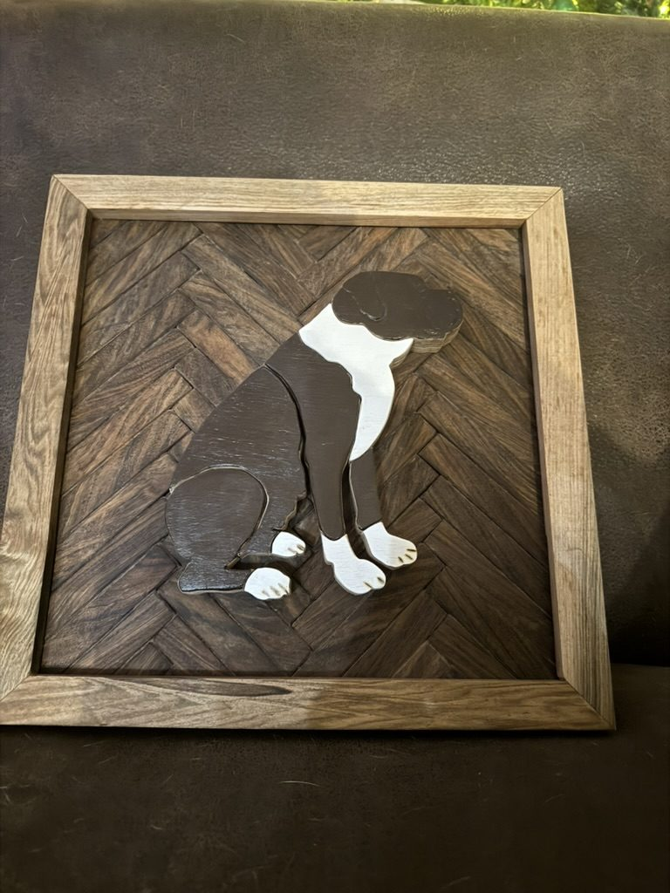
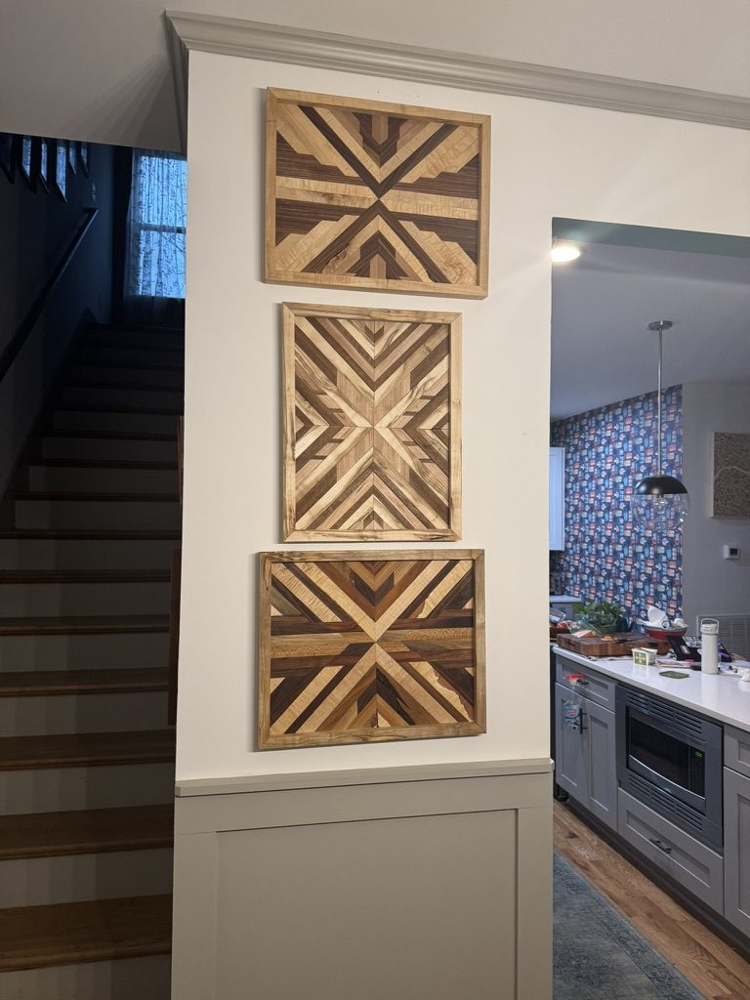
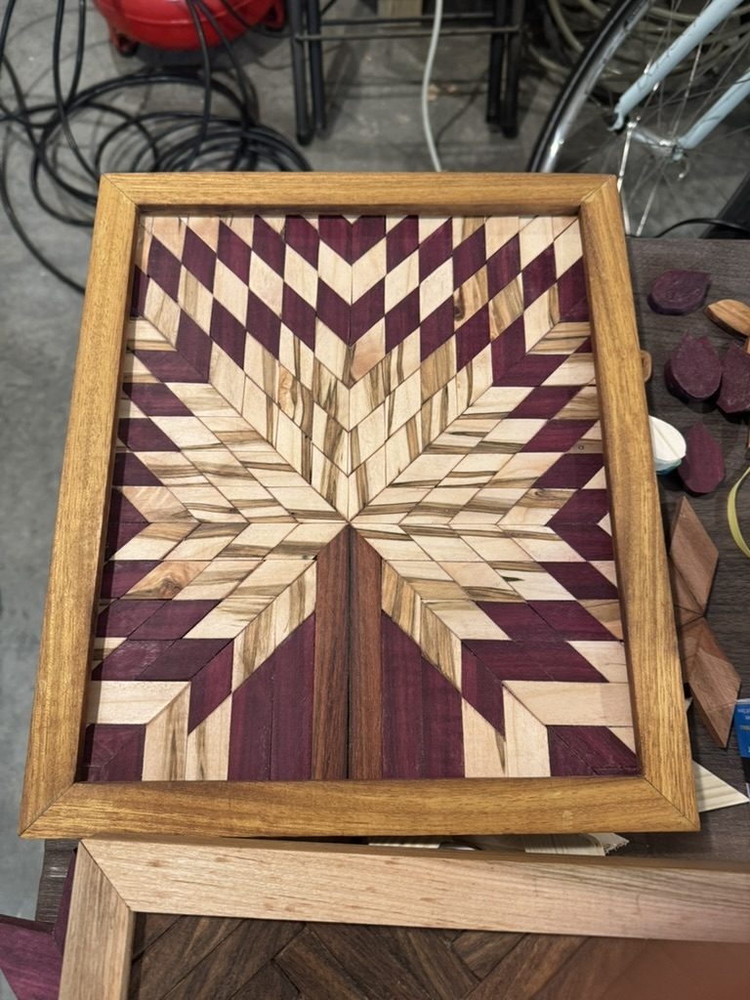
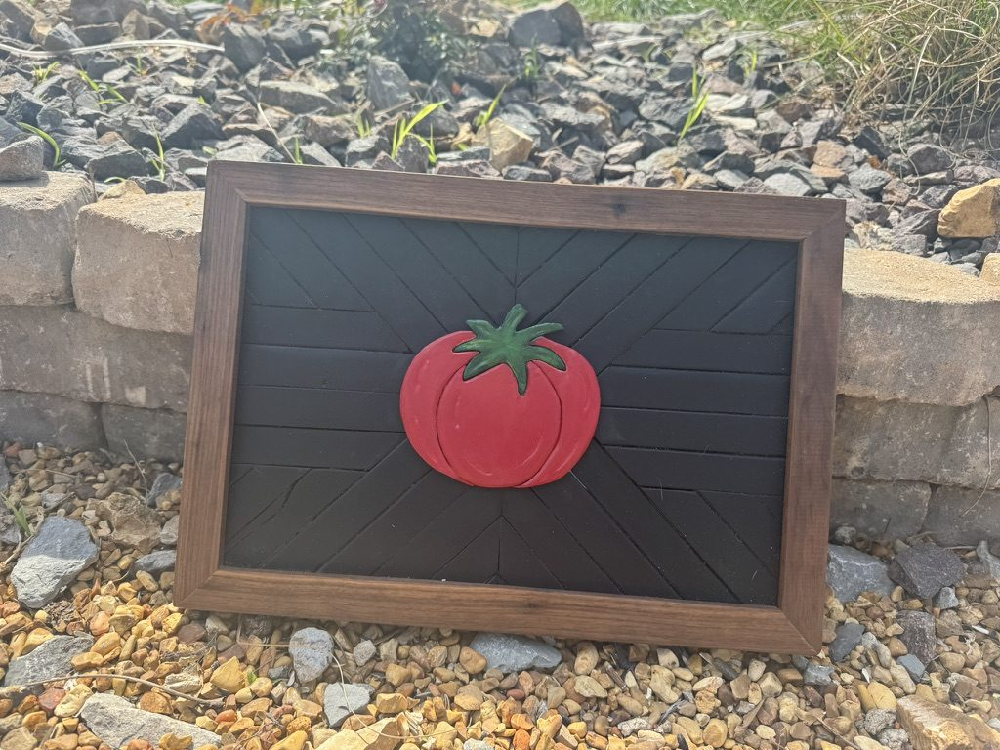
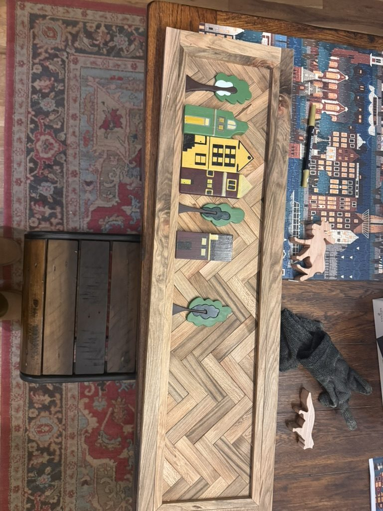

Woodworking Art
Getting Dusty
Geometric wood art & handcrafted pieces — Nashville, TN
Artist Statement
I work with reclaimed and exotic hardwoods to create geometric compositions and figurative pieces that celebrate the natural beauty of wood grain. Each piece is hand-cut, fitted, and finished — an exploration of pattern, symmetry, and the warmth only wood can offer.
Works

Compass Star
A radial eight-point star built from precisely mitered strips of contrasting hardwoods. Inspired by traditional quilt patterns, translated into grain and geometry.

Good Boy
A painted wood silhouette of a sitting dog set against a dark herringbone field — figurative portraiture in reclaimed hardwood.

Barn Quilt Star
A bold eight-point quilt star with deep burgundy purpleheart accents radiating from a central starburst.

Hummingbird
A painted wood hummingbird with layered wing detail mounted over a rustic herringbone oak background.

Triptych Installation
Three individually framed geometric panels designed as a unified wall installation, each with a distinct diagonal composition that creates rhythm across the set.

Southwest Diamond
A stacked diamond motif with Southwestern stepped-edge borders and warm mixed tones — bold and architectural.

Violet Star
High-contrast chevron star with striking purpleheart and pale maple — a graphic two-tone composition with exceptional precision.

Midnight Angles
Bold black-and-natural composition using the dramatic figuring of spalted maple against ebonized strips — the grain speaks as much as the geometry.

Garden Tomato
A vibrant painted tomato in layered wood set against an ebonized herringbone field — playful and graphic.

Little Neighborhood
A vertical herringbone panel with a charming row of painted houses and trees — whimsical, storybook-inspired wall art.

Harvest Cross
A vivid chevron X composition with painted yellow and green strips against warm walnut — bold color meets geometric precision.
Contact
Interested in a piece or a custom commission? Get in touch.